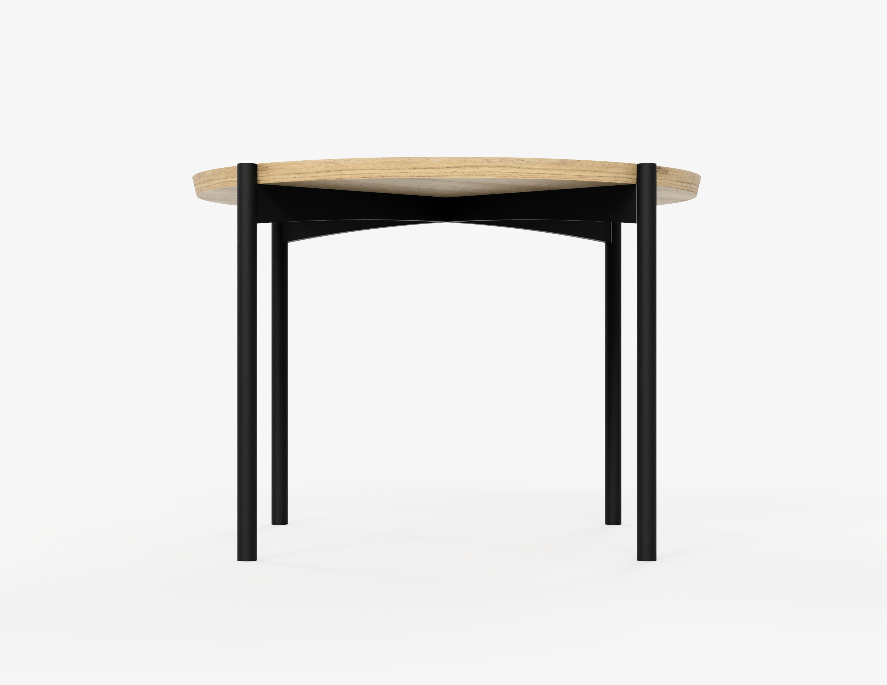
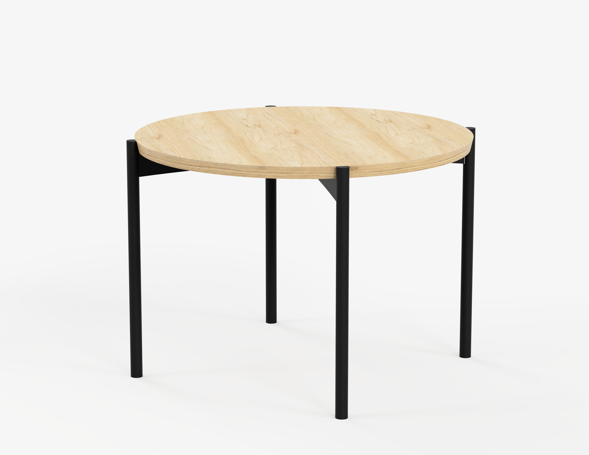
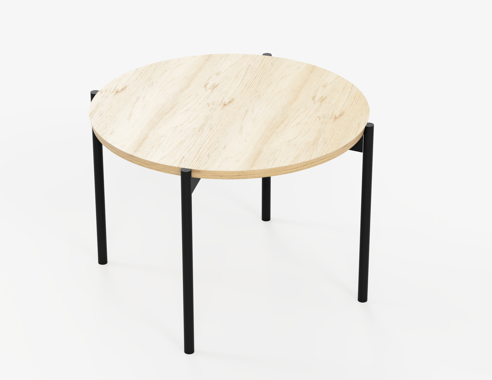

Table Circle
WOODLAND



Uważam że charakter tego stołu zamyka się w dwóch określeniach ,,lekkość” i ,,delikatność”. Gdyby ktoś spytał się mnie: Czy myślę że ten stół ma płeć? Odpowiedziałabym: Tak, jest kobietą i to niezwykłą, bo Wenus z obrazu Botticelliego. Z natury ciężkie drewno dębu idealnie wcieliło się tutaj w rolę filigranowej konstrukcji. Projekt został stworzony w ramach sierpniowego stażu w firmie ,,This is Wood”.